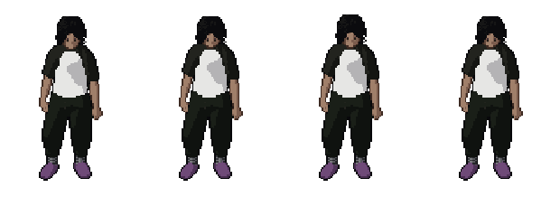
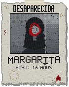
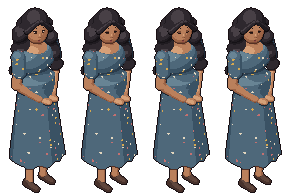
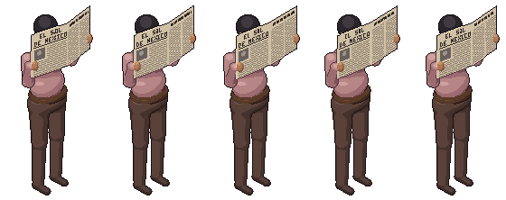
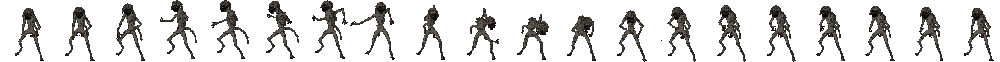
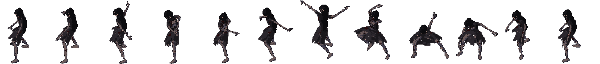
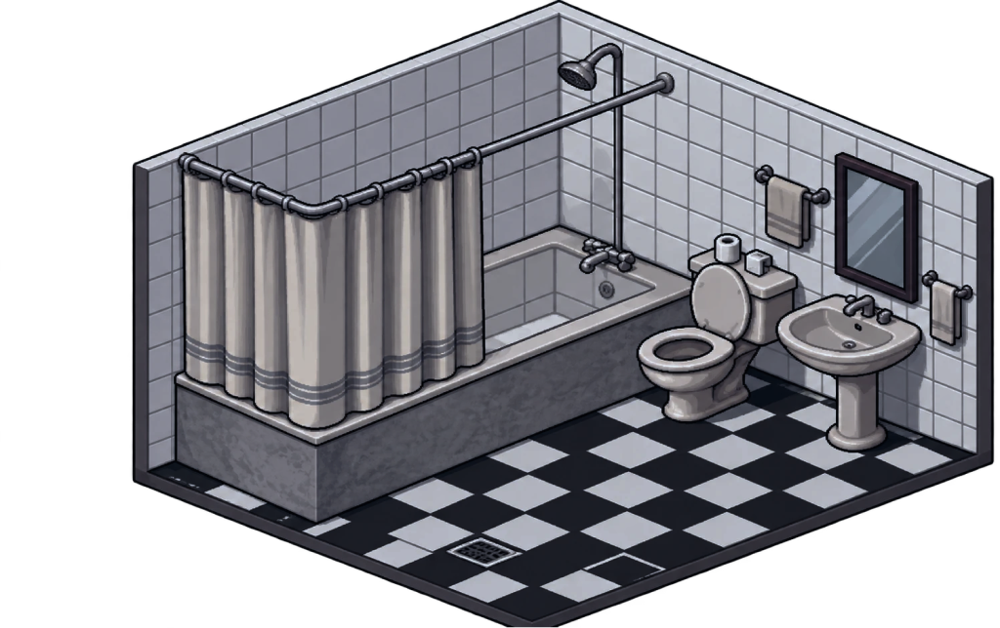

17 años · Protagonista
Elaki Flores Hernández
No tiene poderes ni armas: solo su memoria y su obstinación. Es el único que sigue buscando.
«Ahí está ella. Yo no estaba loco.»
Nadie recuerda que tuviste una…
Imagina que un día despiertas y bajas a desayunar.
En la mesa hay tres platos. Solo tres.
Preguntas: «¿Dónde está Margarita?»
«Hijo… tú nunca tuviste una hermana.»
Pero tú la recuerdas.
Un videojuego 2D en pixel art de terror psicológico. Aquí no hay armas ni combate: el miedo viene de lo que descubres.
la casa y cada dimensión con point and click.
los portales del baño al cumplir cada nivel.
la casa real con cada dimensión.
a las entidades cuidando tu salud.
¿Qué pasó el 31 de octubre?
130,000
Carencia nace de esa herida.
Fuente: RNPDNO, 2026.
Toda la familia insiste en que Margarita nunca existió. Solo Elaki la recuerda.

17 años · Protagonista
No tiene poderes ni armas: solo su memoria y su obstinación. Es el único que sigue buscando.
«Ahí está ella. Yo no estaba loco.»

16 años · Desaparecida desde el 31 de octubre
Su hermana. La persona que lo mantenía en pie. Su voz lo llama desde el otro lado del espejo.
«Ayuda…»

Madre
Triste y agotada. Intenta estar presente, pero no lo logra del todo.
«Hijo… tú nunca tuviste hermana.»

Padre
Indiferente. Se refugia detrás del periódico y cierra cualquier conversación.
«Termina tu desayuno y vuelve a la cama.»
No puedes pelear contra ellas. Mueve la luz para encontrarlas.


Cada vez que Elaki cruza el espejo, su casa se deforma un poco más.
Prólogo
Su familia dice que Margarita nunca existió. La casa dice otra cosa.
Sentirás duda
Nivel 1
Representa Valle inquietante
Lo familiar que se siente mal. El hogar sigue ahí, pero ya no obedece su forma.
Sentirás desorientación
Nivel 2
Representa El miedo a perder
Lo que amas se convierte en lo que te persigue.
Sentirás urgencia
Nivel 3
Representa La mente se rompe
Ver cosas donde no las hay y sentirse observado.
Sentirás opresión
Estás en el baño de Elaki. Algo aquí no cuadra.

Elaki · pensamiento
No te vamos a contar el final.